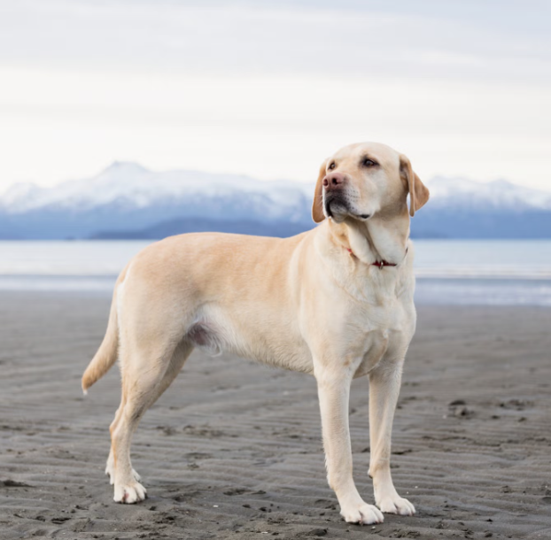

Marathon running
Long-distance running has taught me how to set challenging goals, stay consistent, and keep moving forward through demanding moments.
Beyond Engineering
Engineering is an important part of who I am, but my interests outside the classroom and workplace have also shaped how I face challenges, work with others, and keep learning.
These activities reflect the discipline, teamwork, persistence, and sense of adventure that I bring to my personal and professional goals.

Long-distance running has taught me how to set challenging goals, stay consistent, and keep moving forward through demanding moments.
Snowboarding gives me a way to stay active, take on new challenges, and improve through practice and persistence.
Baseball has strengthened my teamwork, communication, and ability to contribute toward a shared objective.
Skydiving has challenged me to prepare carefully, manage risk responsibly, and stay focused in unfamiliar situations.